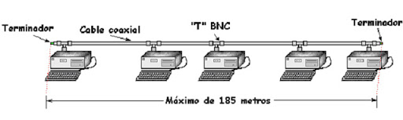
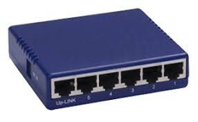
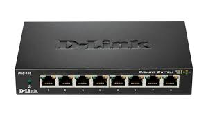

Galería
A continuación tenemos una serie de images de switch y hub para aprender a reconocerlos.
HUB y Switch
Historia
La interconexión de equipos en una red tiene como objetivo unir los distintos dispositivo a una misma red para, para lograr esto se empezó uniendo los cables provenientes de los dispositivos a un bus principal con la ayuda de conexiones de BNC en forma de T, de esta manera la información era fácilmente accesible por todos los dispositivos, pero eran poco seguras e ineficientes por tanto sergio el hub, pero no fue hasta la creación del Switch que los problemas con la la interconexión no se resolvieron ya que estos dos dispositivos tenían un problema con el dominio de colisión. Este es problema que ocurre cuando dos equipos escribir o envían información a la vez en el mismo medio por tanto esta información no se puede recuperar ya que se superponen.
Hub
El hub tiene la función de unir los cables provenientes de los dispositivos a un bus principal, de manera que la información que entraba por alguno de sus puertos eran volcados al bus principal. Con este dispositivo conseguimos una mejor organización y estructuración de las redes. Para evitar los problemas de colisión se creó un sistema en el cual si dos equipos escribían o enviaban a la vez ambos esperaban un tiempo aleatorio y volvían a enviar el mensaje, pero los problemas de colisiones seguían ya que el las redes aumentaron rápidamente su tamaño, por eso se creó el hub.
Switch
Este era muy similar al hub pero contaba con “inteligencia”, eso significa que es capaz de gestionar la información que recibe en cada puerto y evitar que se escriba en dos equipos a la vez, por tanto el dominio de colisión se reduce drásticamente a sólo la conexión con el equipo y el switch por tanto que ocurra esto es demasiado poco frecuente.
Ventajas
Hub
Ventajas
Desventajas
Switch
Ventajas
Desventajas
Galería
A continuación tenemos una serie de images de switch y hub para aprender a reconocerlos.
Más
Si quieres aprender más, aquí tienes un par de videos
Ademas por si estas interesado en adquirir uno de estos dispostivos, tienes marcada una tienda en un mapa.